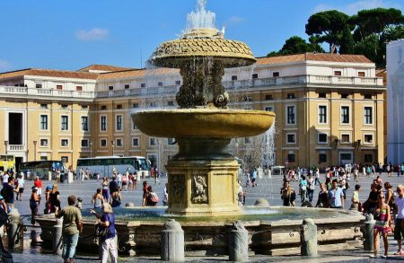

ROMA
La imagen de la Basílica de San Pedro del Vaticano no la podemos entender sin verla integrada en la imponente plaza de San Pedro.
Cuando viajes a Roma y vayas a visitar el Vaticano, te adelanto que la plaza de San Pedro sin duda te resultará impresionante por sus dimensiones.Te resultará curioso saber que delante de la Basílica de San Pedro no siempre ha estado la enorme plaza que vemos en la actualidad.
Historia plaza San Pedro del Vaticano
La configuración urbanística que vemos ahora se remonta a mediados del siglo XVII pues, con anterioridad, para llegar a la entrada principal gran basílica de la Cristiandad, los peregrinos recorrían una zona denominada Borgo Nuovo,
Se trataba de una zona urbanística en la que se distribuían numerosos edificios.
En el año 1500 se derribaron dichos edificios y se construyó una primera gran avenida entre el Puente San Angelo, junto al río Tiber, y la Basílica de San Pedro.Dicha avenida era conocida como Vía Recta o Vía Alessandrina, que es el antecedente de la actual Via della Conciliazione.
Fue entre 1656 y 1667 cuando se llevó a cabo el proyecto de la actual plaza de San Pedro, el cual fue diseñado por el escultor y arquitecto Bernini.
Por entonces el espacio central ya estaba ocupado por el citado gran obelisco egipcio, situado en dicho lugar desde 1586.
La plaza se diseñó con dos espacios claramente delimitados.
